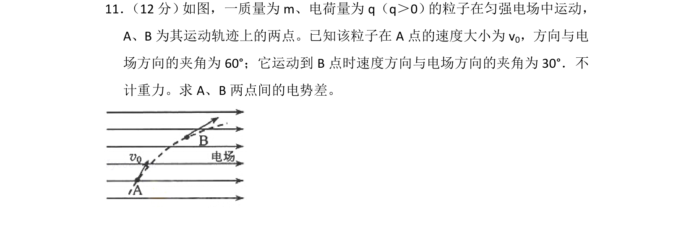
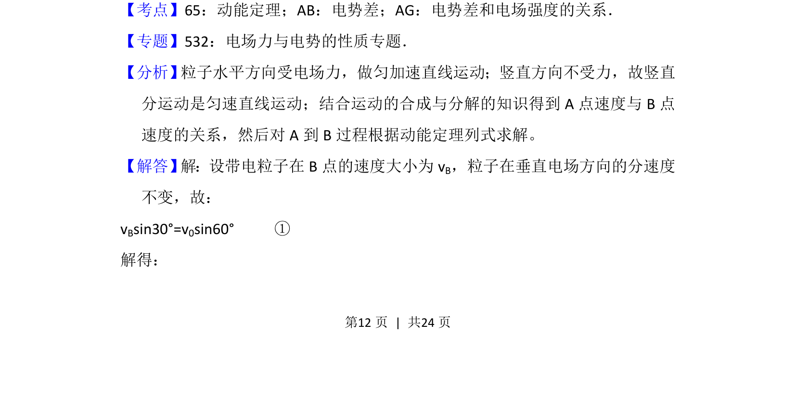
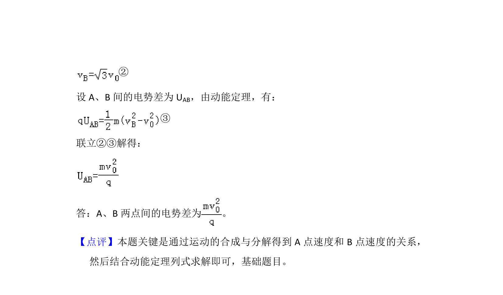

考点：动能定理 运动的合成与分解 电势差

带电粒子在匀强电场中运动，已知初末速度方向，求两点间电势差。


📄 原 PDF 第 12 页：
素材/真题/吉林/2008-2024·（吉林）物理高考真题/2015年高考物理试卷（新课标Ⅱ）（解析卷）.pdf
11． （12分） 如图，一质量为m、电荷量为q（q＞0） 的粒子在匀强电场中运动， A、B为其运动轨迹上的两点。已知该粒子在A点的速度大小为v 0，方向与电 场方向的夹角为60°；它运动到B点时速度方向与电场方向的夹角为30°．不 计重力。求A、B两点间的电势差。
【考点】65：动能定理；AB：电势差；AG：电势差和电场强度的关系．菁优网版权所有 【专题】532：电场力与电势的性质专题． 【分析】 粒子水平方向受电场力，做匀加速直线运动；竖直方向不受力，故竖直 分运动是匀速直线运动；结合运动的合成与分解的知识得到A点速度与B点 速度的关系，然后对A到B过程根据动能定理列式求解。 【解答】 解：设带电粒子在B点的速度大小为vB，粒子在垂直电场方向的分速度 不变，故： vBsin30°=v0sin60° ① 解得：